PORTAFOLIO DE TÍTULO
INTRODUCCIÓN
Mi Nombre es Juan Carlos Feliu Diaz y soy estudiante de la carrera técnico Analista Programador. El presente Portafolio tiene como objetivo presentar los conocimientos, habilidades y competencias adquiridas durante mi formación académica a lo largo de los cuatro semestres.
En este documento se evidencian los aprendizajes logrados mediante el desarrollo de las actividades prácticas, uso de herramientas tecnológicas y la realización de un proyecto integrador, además de una reflexión personal sobre mi desempeño y proyección profesional.
PERFIL DE EGRESO
Como técnico analista programador soy un profesional capacitado para desarrollar soluciones informáticas mediante el uso de lenguajes de programación, bases de datos y herramientas tecnológicas. Estoy preparado para analizar requerimientos, diseñar sistemas y participar activamente en el desarrollo de software.
Durante mi formación, he adquirido habilidades de programación, desarrollo web, manejo de bases de datos y uso de entornos virtuales, lo que me permite enfrentar problemas tecnológicos y proponer soluciones eficientes.
REFLEXIÓN DE APRENDIZAJES ADQUIRIDOS
PRIMER Y SEGUNDO SEMESTRE: Fundamentos y Primeros Proyectos
A lo largo de mi formación como estudiante de la carrera de Analista Programador, he adquirido diversos conocimientos y habilidades que se alinean directamente con el perfil de egreso, el cual me formó profesionalmente y con capacidades de desarrollar soluciones informáticas eficientes, adaptadas a las necesidades del entorno.
En el área de sistemas y herramientas, el manejo de entornos como DOS me permitió comprender el funcionamiento interno de los sistemas computacionales. Esto se relaciona con el perfil de egreso en cuanto a la capacidad de instalar, configurar y administrar entornos tecnológicos necesarios para el desarrollo de soluciones.
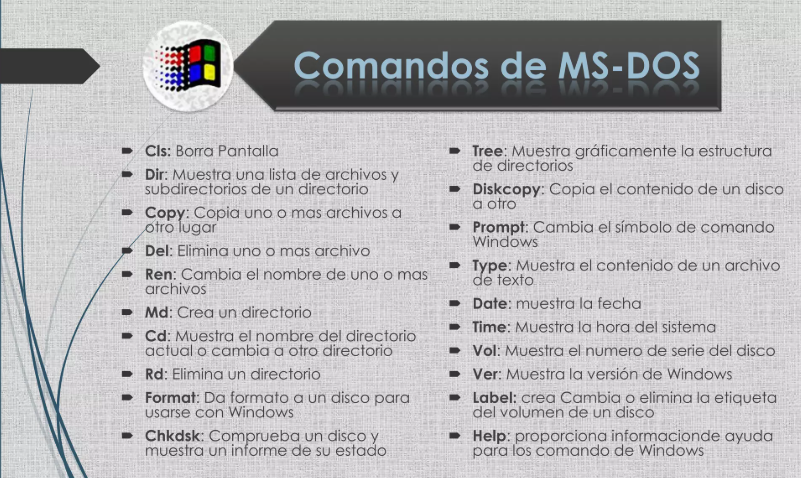
Respecto a la programación, el aprendizaje de lenguajes como Python y JavaScript fortaleció mi lógica computacional y mi capacidad para resolver problemas mediante el desarrollo de software. La aplicación de estructuras de control y la programación orientada a objetos me permitió crear programas organizados y funcionales, lo cual es fundamental dentro del perfil profesional de un analista programador.
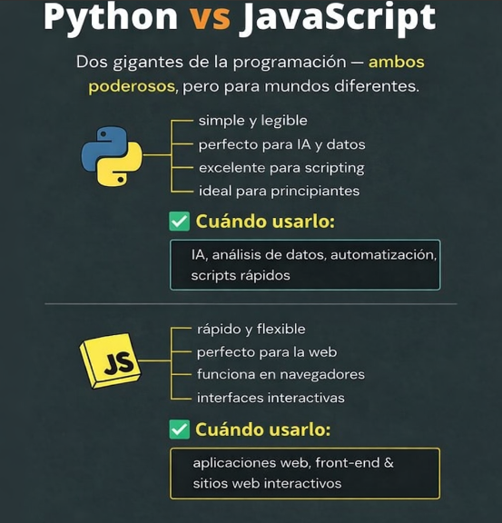
En el ámbito del desarrollo web, el uso de HTML y CSS me permitió comprender la estructura y el diseño de interfaces, facilitando la creación de aplicaciones con una adecuada presentación visual y orientación al usuario. Esto se vincula con el perfil de egreso en la capacidad de desarrollar soluciones digitales accesibles y funcionales.
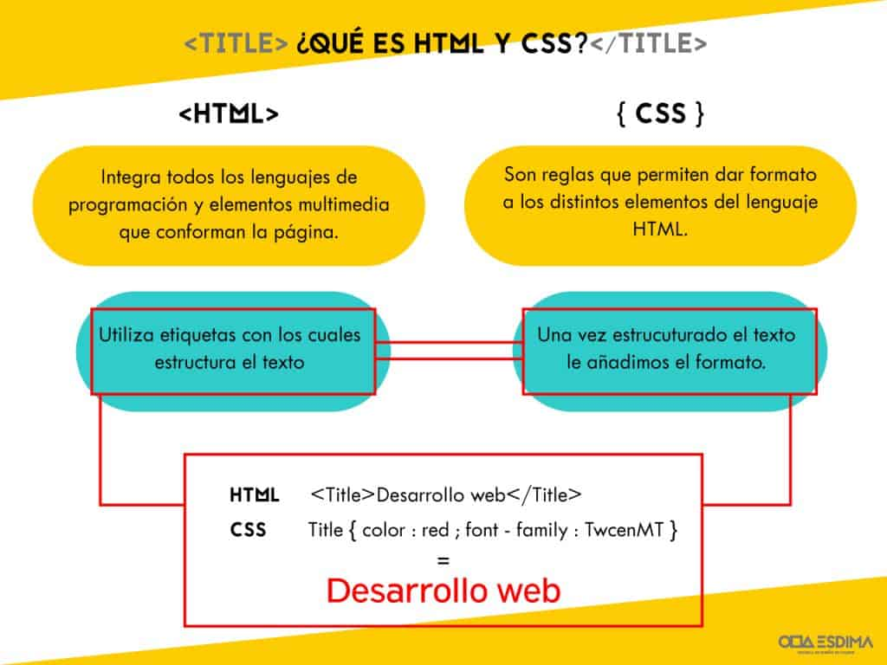
Por otra parte, el trabajo con bases de datos mediante MySQL me permitió gestionar información de manera estructurada, aplicando consultas y estableciendo relaciones entre datos. Esta competencia es clave dentro del perfil de egreso, ya que permite diseñar y mantener sistemas de información eficientes.
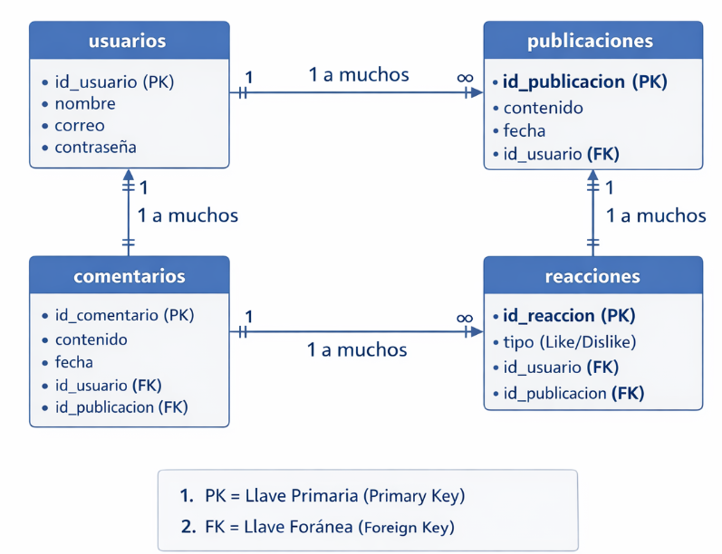
Proyecto Integrador: Red Social Tipo Facebook
Mediante los aprendizajes del primer y segundo semestre, tuve que crear un proyecto con todas las herramientas que pasamos. Este consistía en la implementación de una red social tipo Facebook, con funciones esenciales:
- Registro de usuario
- Ingreso de usuario creado
- Aceptar amigos
- Dar me gusta o no me gusta
- Creación de comentarios
Todo desarrollado mediante Visual Studio Code (VSC) como entorno generador de código y MySQL para la persistencia y manipulación de datos relacionales.
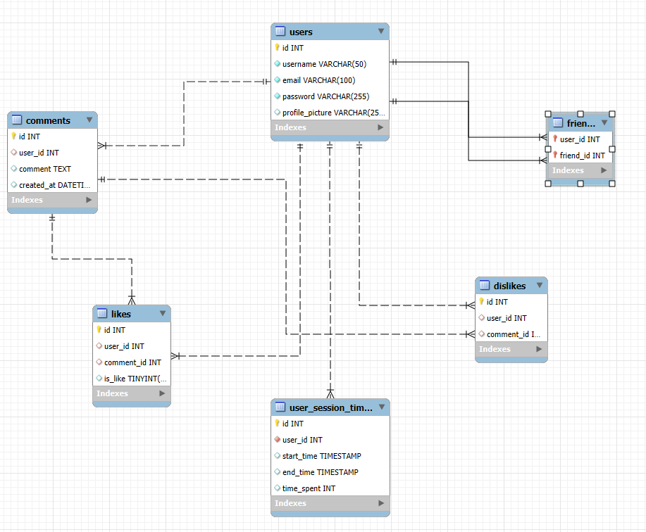
TERCER Y CUARTO SEMESTRE: Gestión, IA y Requerimientos
Taller de Gestión de Proyectos de Desarrollo de Software
Durante este semestre adquirí mis primeros conocimientos formales sobre la gestión de proyectos de desarrollo de software, aprendiendo que planificar y controlar un proyecto es tan importante como escribir código.
Una de las principales dificultades que tuve fue aprender a estimar tiempos de desarrollo, ya que al principio tendía a subestimar el esfuerzo necesario para completar cada tarea, sin considerar posibles imprevistos o errores técnicos.
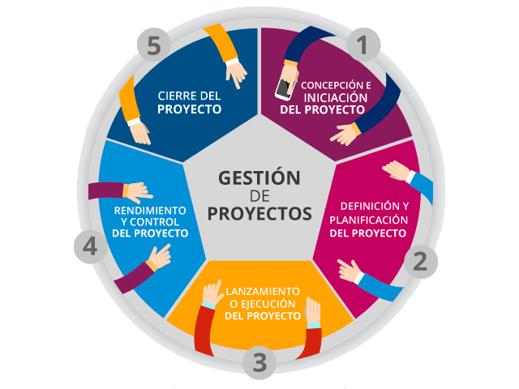
INTELIGENCIA ARTIFICIAL (I.A)
Con los avances de la IA, se nos permitió utilizarla como apoyo para el desarrollo de proyectos. Aprendí a utilizar herramientas como asistentes de programación para resolver dudas técnicas, optimizar código y acelerar el desarrollo.
También con el tiempo aparecieron los problemas con las IA, que al principio facilitaron las tareas, pero luego surgieron limitaciones. Había trabajos muy intensos en los cuales, si no pagabas una suscripción de mayor potencia o recursos, las limitaciones de uso dificultaban el flujo de trabajo continuado.
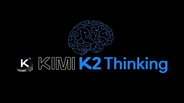
En conclusión, las competencias adquiridas en esta asignatura me permitieron comprender el ciclo completo de un proyecto de software, desde la concepción hasta el cierre, preparándome para trabajar de forma colaborativa y profesional.
GESTIÓN DE REQUERIMIENTOS I Y II
Durante el tercer semestre cursé la asignatura Gestión de Requerimientos I, una de las materias más importantes para mi formación profesional. El principal objetivo fue aprender a identificar, analizar y documentar las necesidades del cliente y traducirlas en especificaciones claras para el desarrollo.
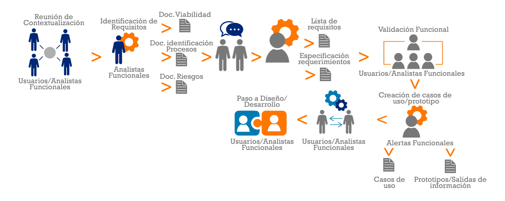
Técnicas para Recopilar Información de Usuarios y Clientes:
- Entrevistas
- Encuestas
- Observación directa
- Reuniones de trabajo
- Análisis documental
Estas herramientas permiten comprender el funcionamiento actual de una organización y detectar con exactitud las necesidades que el nuevo sistema debe cubrir.
Estructura y Roles en un Proyecto de Desarrollo:
Patrocinador (Sponsor)
Ejecutivo o cliente que financia el proyecto, aprueba el presupuesto y garantiza que la iniciativa se alinee con los objetivos del negocio.
Project Manager (PM)
Líder principal. Se encarga de la planificación, asignación de tareas, control del presupuesto y gestión activa de riesgos.
Líder Técnico / Scrum Master
En proyectos de tecnología e ingeniería, resuelve los problemas técnicos y elimina las barreras e impedimentos para el equipo de trabajo.
Miembros del Equipo
Profesionales especializados (desarrolladores, diseñadores, analistas, testers) que ejecutan las tareas técnicas para cumplir con los entregables.
Usuarios Finales
Las personas reales que utilizarán cotidianamente el producto, servicio o sistema informático una vez terminado.
Proveedores o Contratistas
Agentes externos que proporcionan materiales especializados, plataformas en la nube, infraestructura o servicios necesarios para el desarrollo.
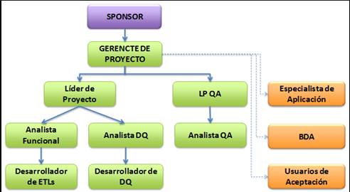
Otra de mis experiencias clave con la gestión de requerimientos fue aprender a diferenciar con rigor los requisitos funcionales y los no funcionales, algo fundamental a la hora del desarrollo, formulando los casos de uso y la interacción del usuario final para alcanzar sus objetivos.
Requerimientos Funcionales
Describen los comportamientos y funciones que el sistema debe realizar obligatoriamente:
- Registrar usuarios y perfiles
- Iniciar sesión con validación de credenciales
- Generar reportes analíticos
- Realizar búsquedas filtradas
Requerimientos No Funcionales
Establecen las características de calidad, restricción y rendimiento técnico:
- Seguridad y cifrado de información
- Rendimiento y velocidad de respuesta
- Alta disponibilidad y confiabilidad
- Facilidad de uso y accesibilidad (UX)
Modelamiento UML
Se profundizó en el uso de diagramas UML como herramienta gráfica de análisis y diseño arquitectónico: diagramas de casos de uso, de actividades, de secuencia y de clases.
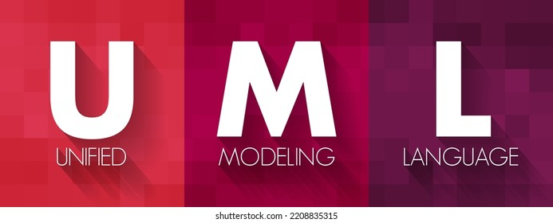
Trazabilidad de Requerimientos
Aprendí a relacionar cada requisito documentado con los componentes y módulos del sistema que lo implementan, facilitando el seguimiento, control y pruebas durante todo el ciclo de desarrollo.
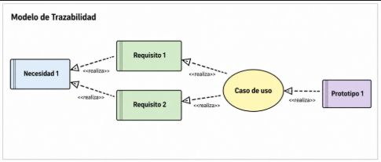
Gestión de Cambios
Uno de los aspectos más importantes fue comprender que los requerimientos pueden modificarse debido a nuevas necesidades del cliente o del negocio. Se estudiaron los procedimientos formales para:
- Registrar cambios
- Analizar impactos
- Evaluar riesgos
- Actualizar documentación
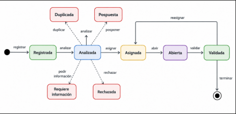
ANÁLISIS F.O.D.A
4.1 Fortalezas
- Dominio técnico transversal: Durante la carrera aprendí a utilizar distintas herramientas y lenguajes de programación como Python, JavaScript, HTML, CSS y MySQL, adaptándome rápidamente a nuevas metodologías y tecnologías.
- Interés por el aprendizaje continuo: Siempre he buscado complementar los contenidos vistos en clases mediante investigación personal, tutoriales y herramientas como la Inteligencia Artificial para ampliar mis conocimientos.
- Responsabilidad y compromiso: Logré cumplir rigurosamente con trabajos individuales y grupales, enfrentando desafíos académicos que exigían organización, planificación y dedicación constante.
- Trabajo en equipo: Los proyectos desarrollados me permitieron colaborar activamente con compañeros, compartir conocimientos y comprender el valor de la comunicación en un equipo de software.
4.2 Oportunidades
- Crecimiento tecnológico: Alta demanda de profesionales relacionados con el desarrollo de software, análisis de sistemas y TI en el mercado laboral chileno e internacional.
- Avance de la Inteligencia Artificial: Las nuevas herramientas de IA representan un apoyo clave para optimizar la productividad de programación y acelerar el autoaprendizaje continuo.
- Acceso a formación complementaria: Amplia oferta de cursos, certificaciones y recursos en línea para continuar perfeccionando habilidades técnicas después del egreso.
- Experiencia profesional en expansión: Las prácticas profesionales y proyectos laborales brindan la oportunidad de aplicar lo aprendido y madurar técnicamente en escenarios reales.
4.3 Debilidades
- Falta de profundización en POO: Sentí que algunos temas, especialmente POO en Python, podrían haberse abordado con mayor profundidad, generando dificultades temporales en soluciones complejas.
- Limitada experiencia laboral en el área: Al estar en proceso de egreso, aún me encuentro consolidando mi experiencia práctica en entornos de producción a gran escala.
- Dependencia inicial de herramientas de apoyo: Recurrí frecuentemente a herramientas externas para resolver dudas técnicas; mi desafío permanente es seguir robusteciendo mi autonomía y confianza profesional.
- Tecnologías emergentes: Aunque cuento con bases sólidas, áreas como Cloud Computing, DevOps avanzado, ciberseguridad y bases de datos NoSQL requieren especialización adicional.
4.4 Amenazas
- Rápida evolución tecnológica: El vertiginoso ritmo de avance del software exige actualización continua para evitar la obsolescencia técnica.
- Alta competitividad laboral: Creciente número de desarrolladores en el mercado, requiriendo diferenciarse activamente con proyectos prácticos, certificaciones y excelencia profesional.
- Automatización mediante IA: Las herramientas generativas pueden reemplazar tareas mecánicas de código básico, exigiendo desarrolladores con mayor capacidad analítica y arquitectónica.
- Altas exigencias de entrada: Empresas que demandan experiencia previa y conocimientos en stacks altamente específicos a nivel junior.
REFLEXIÓN PERSONAL Y CONCLUSIÓN
Considerando todo lo aprendido a nivel profesional, se me entregaron herramientas esenciales para desempeñarme con solidez en áreas de análisis de sistemas, gestión de proyectos y desarrollo de software.
Todo esto fortaleció mi capacidad para trabajar de manera organizada, documentar procesos y comunicarme eficazmente con clientes y equipos de desarrollo multidisciplinarios, competencias que serán de gran utilidad en mi futura carrera profesional.
Descargar Documento Oficial de Título
Obtén el archivo Word oficial original (PORTAFOLIO DE TITULO.docx) con todos los textos, imágenes y formato institucional presentado ante la comisión evaluadora.